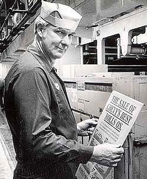
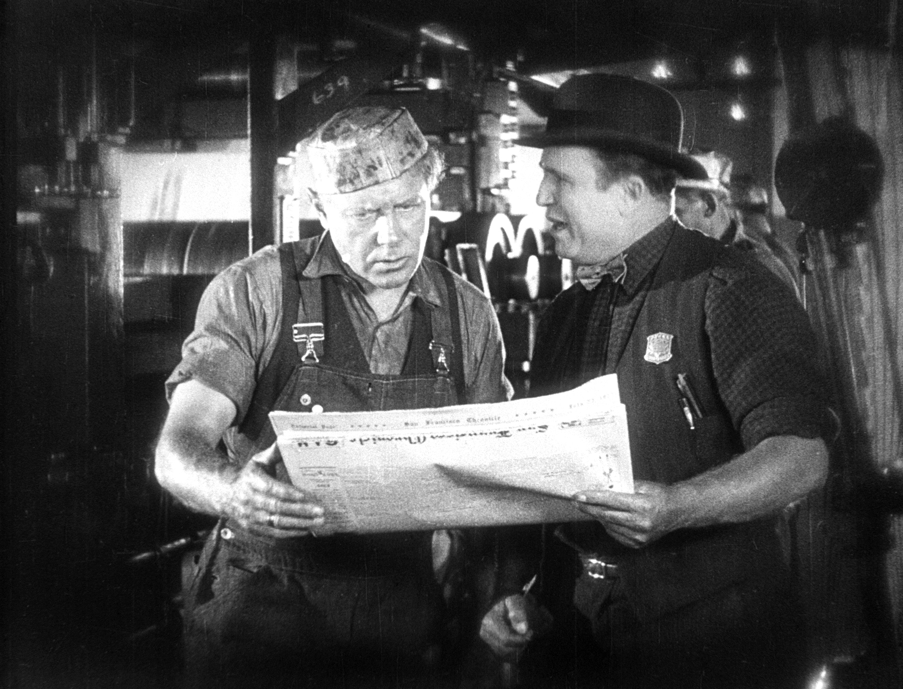

1.) FIND A NEWSPAPER!
2.) TAKE A PAGE AND FOLD IT IN HALF VERTICALLY
3.) FOLD DOWN THE TOP CORNERS TO THE CENTER OF THE PAGE
4.) FOLD UP THE BOTTOM FLAPS
5.) OPEN UP THE BOTTOM, AND PLACE ON YOUR HEAD, AND YOU'RE DONE. RIGHT???

Newspaper hats weren't always the fun random passtime they are today. In fact, they were actually legitimately worn by many craftsmen and tradesmen in England in the 1800's! The hats were worn by carpenters, house painters, and paper stainers to protect the workers hair from sawdust and paint spatters. Printers, glass blowers, and braisers wore paper hats to keep their long hair from getting tangled in tools and machinery. The paper was also absorbent, and could absorb a significant amount of perspiration since the bands were made thick.
Many craftsman folded their own paper hats. However, there is evidence that these special hats were available for sale, ready-made, but only from certain hat-makers, and probably on the side! There are no advertizements in old newspapers offering paper hats for sale. However, there are a few advertisements from upscale hat-makers that specifically state, "No Paper Hats Sold." The suggestion is that these paper hats were only sold to manual laborers of the lower classes, probably by a few hatters known to them. Therefore, those hatters had no need to advertize their paper wares since the working men who needed them knew where to go to get their hats. More than likely, it was by word of mouth that these craftsmen and tradesmen directed those new to their trades to the few hatters which provided paper hats.
There are many ways to craft a hat out of paper, though this most common way listed on this site is most definitely a descendent from the hat-making times of the early 1800's in Britain.
 
Printing press workers sporting a more advanced paper hat style while they work